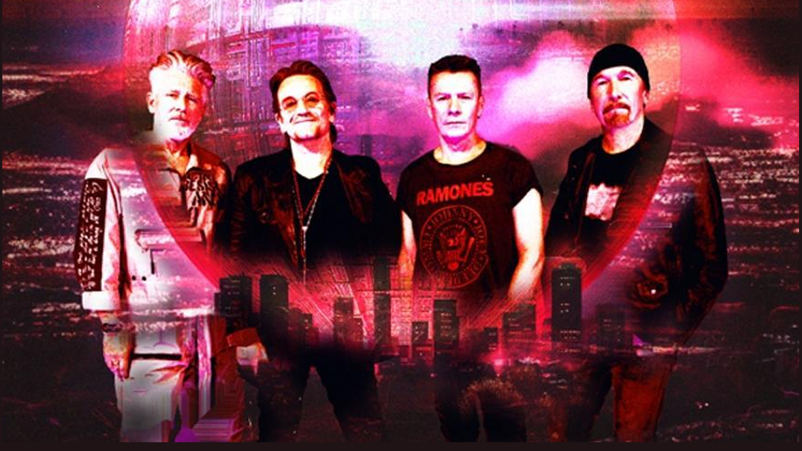

U2
Es una banda de rock alternativo originaria de Dublín (Irlanda) formada en 1976, El sonido inicial de U2 tenía sus raíces en el post-punk, pero posteriormente fueron incorporando a su música elementos de otros géneros: "Su cancionero es extenso y está repleto de variaciones: desde el rock más clásico hasta el pop más redondo, pasando por el coqueteo con la electrónica o los homenajes al góspel". La década de su éxito fue de 1980 a 1990.

Integrantes
- Bono (Vocalista)
- The Edge (Guitarra,Teclado y Voz)
- Adam Clayton (Bajo)
- Larry Mullen Jr (batería)
Canciones más exitosas
- With or Without you
- Come together
- Where the Street
- New year´s day
- One
- Beatiful day
- All I want Is You